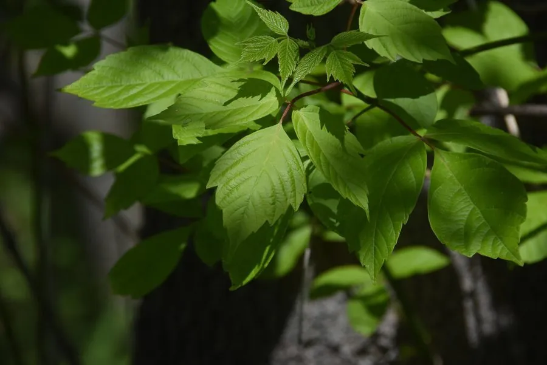

乔木 · 植物界
复叶槭 Acer negundo

原产北美的落叶乔木，复叶是槭树中少见的类型，生长迅速、耐修剪，常作行道树，但在部分地区逸生为入侵植物。
- 分类
- 门被子植物门纲木兰纲目无患子目科槭树科属槭属
- 栖息环境
- 海拔 1000 米以下的平原、路旁与河岸，喜光耐寒耐旱
- 地理分布
- 原产北美洲，中国东北、华北及长江流域引种栽培
- 保护级别
- 暂无评估；中国未列入国家重点保护野生植物名录
物种志
复叶槭为落叶乔木，高可达 20 m，树皮灰褐色、纵裂；羽状复叶对生，小叶 3–7 枚，卵形至椭圆状披针形，边缘具粗齿，是槭属中少见的复叶类型。花期 3–4 月，花单性异株，无花瓣，生于下垂的花序上；双翅果黄褐色，两翅开张呈锐角，成熟后随风传播。
复叶槭原产北美洲，中国东北、华北及长江流域引种栽培，喜光、耐寒、耐旱，适应性强，生长迅速。因生长快、耐修剪，常被用作行道树与防护林树种；木材轻软，可供造纸与细木工用；春季花蜜丰富，是重要的蜜源植物。但复叶槭繁殖力强，在欧美部分地区已逸生为入侵植物，栽培时需注意控制其扩散。
形态与习性
- 株高可达 20 m，树皮纵裂
- 花期3–4 月，花单性异株
- 果期9–10 月，双翅果
- 光照喜光，不耐长期荫蔽
- 水分耐旱，怕积水
- 主要用途行道树与防护林、造纸用材、蜜源
趣味知识
- 复叶槭是槭属中少见的复叶类型，小叶 3–7 枚，与多数掌状裂叶的槭树不同。
- 复叶槭生长迅速、耐修剪，常被用作行道树。
- 复叶槭繁殖力强，在欧美部分地区已逸生为入侵植物。